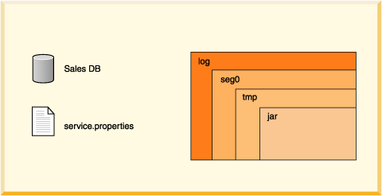

A Derby Database |
- A Derby Database
- The Database Directory
- Creating, Dropping, and Backing Up Databases
- Single Database Shutdown
- Storage and Recovery
- Log on Separate Device
- Database Pages
- Database-Wide Properties
- Database Limitations
A Derby Database
A Derby database contains dictionary objects such as tables, columns, indexes, and jar files. A Derby database can also store its own configuration information.
The Database Directory
A Derby database is stored in files that live in a directory of the same name as the database. Database directories typically live in system directories.
A database directory contains the following, as shown in Figure 2:
-
log directory
Contains files that make up the database transaction log, used internally for data recovery (not the same thing as the error log).
-
seg0 directory
Contains one file for each user table, system table, and index (known as conglomerates).
-
service.properties file
A text file with internal configuration information.
-
tmp directory
(might not exist.) A temporary directory used by Derby for large sorts and deferred updates and deletes. Sorts are used by a variety of SQL statements. For databases on read-only media, you might need to set a property to change the location of this directory. See "Creating Derby Databases for Read-Only Use".
-
jar directory
(might not exist.) A directory in which jar files are stored when you use database class loading.
Read-only database directories can be archived (and compressed, if desired) into jar or zip files. For more information, see Accessing a Read-Only Database in a Zip/Jar.
Figure 2. Derby database directories contain files and directories used by the software.

Derby imposes relatively few limitations on the number and size of databases and database objects. The following table shows some size limitations of Derby databases and database objects:
Table 1.
For a complete list of restrictions on Derby databases and database objects, see the Derby Reference Manual.
Creating, Dropping, and Backing Up Databases
You create new databases and access existing ones by specifying attributes to the Derby connection URL (see Examples).
There is no drop database command. To drop a database, delete the database directory with operating system commands. The database must not be booted when you remove a database. You can get a list of booted databases with getPropertyInfo (see Offering Connection Choices to the User).
To back up a database, you can use the online backup utility. For information on this utility, see the Derby Server and Administration Guide.
You can also use roll-forward recovery to recover a damaged database. Derby accomplishes roll-forward recovery by using a full backup copy of the database, archived logs, and active logs from the most recent time before a failure. For more information on roll-forward recovery see the Derby Server and Administration Guide.
Single Database Shutdown
An application can shut down a single database within a Derby system and leave the rest of the system running. See "Shutting Down Derby or an Individual Database".
Storage and Recovery
A Derby database provides persistent storage and recovery. Derby ensures that all committed transactions are durable, even if the system fails, through the use of a database transaction log. Whereas inserts, updates, and deletes may be cached before being written to disk, log entries tracking all those changes are never cached but always forced to disk when a transaction commits. If the system or operating system fails unexpectedly, when Derby next starts up it can use the log to perform recovery, recovering the "lost" transactions from the log and rolling back uncommitted transactions. Recovery ensures that all committed transactions at the time the system failed are applied to the database, and all transactions that were active are rolled back. Thus the databases are left in a consistent, valid state.
In normal operation, Derby keeps the log small through periodic checkpoints. Checkpointing marks the portions of the log that are no longer useful, writes changed pages to disk, then truncates the log.
Derby checkpoints the log file as it fills. It also checkpoints the log when a shutdown command is issued. Shutting down the JVM in which Derby is running without issuing the proper shutdown command is equivalent to a system failure from Derby's point of view.
Booting a database means that Derby checks to see if recovery needs to be run on a database. Recovery can be costly, so using the proper shutdown command improves connection or startup performance.
Log on Separate Device
You can put a database's log on a separate device when you create it. For more information, see the Derby Server and Administration Guide.
Database Pages
Derby tables and indexes, known as conglomerates, consist of two or more pages. A page is a unit of storage whose size is configurable on a system-wide, database-wide, or conglomerate-specific basis. By default, a conglomerate grows one page at a time until eight pages of user data (or nine pages of total disk use, which includes one page of internal information) have been allocated. (You can configure this behavior; see "derby.storage.initialPages" in Tuning Derby.) After that, it grows eight pages at a time.
The size of a row or column is not limited by the page size. Rows or columns that are longer than the table's page size are automatically wrapped to overflow pages.
Database-Wide Properties
You can set many Derby properties as database-level properties. When set in this way, they are stored in the database and "travel" with the database unless overridden by a system property. For more information, see "Database-Wide Properties" in Tuning Derby.
- Note:
- It is recommended that you work with database-level properties wherever possible.
Database Limitations
Derby databases have these limitations:
-
Indexes are not supported for columns defined on CLOB, BLOB, and LONG VARCHAR data types.
If the length of the key columns in an index is larger than half the page size of the index, creating an index on those key columns for the table fails. For existing indexes, an insert of new rows for which the key columns are larger than half of the index page size causes the insert to fail.
It is generally not recommended to create indexes on long columns. It is best to create indexes on small columns that provide a quick look-up to larger, unwieldy data in the row. You might not see performance improvements if you index long columns. For information about indexes, see Tuning Derby.
-
The system shuts down if the database log cannot allocate more disk space.
A "LogFull" error or some sort of IOException will occur in the derby.log if the system runs out of space. If the system has no more disk space to append to the derby.log, you might not see the error messages.
Previous Page
Next Page
Table of Contents
Index
{kind=link}
{kind=link}
{kind=link}
{kind=link}
{kind=link}